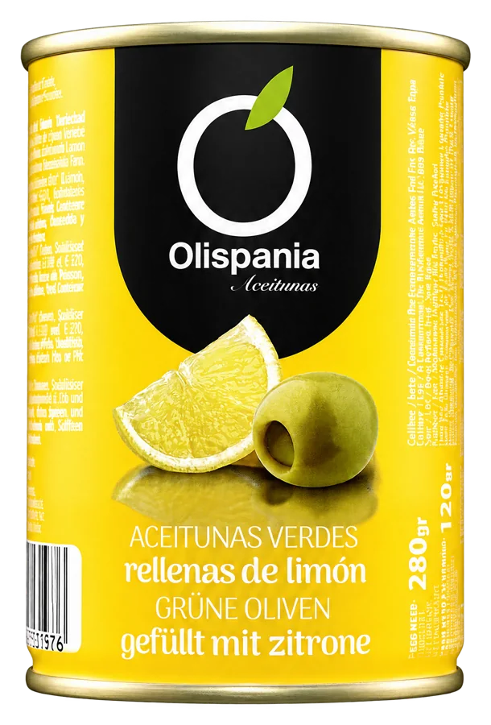
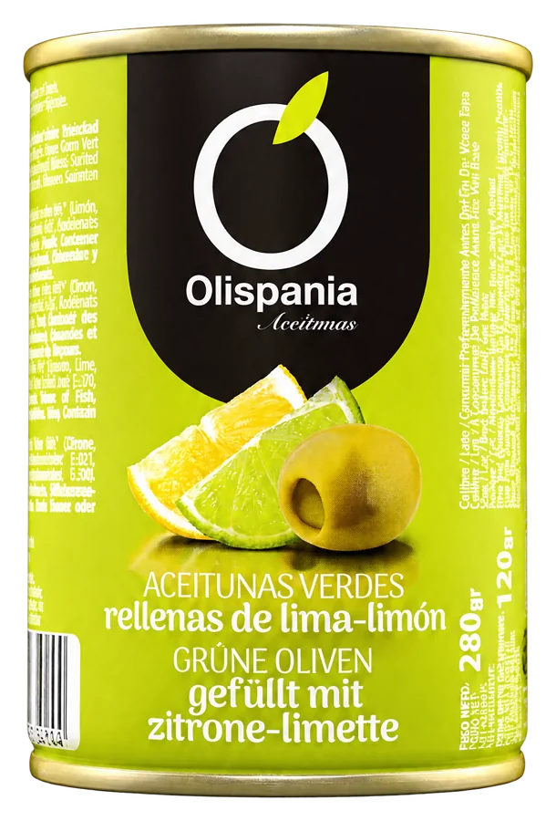
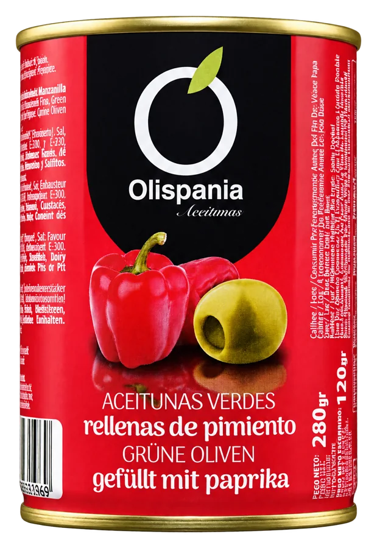
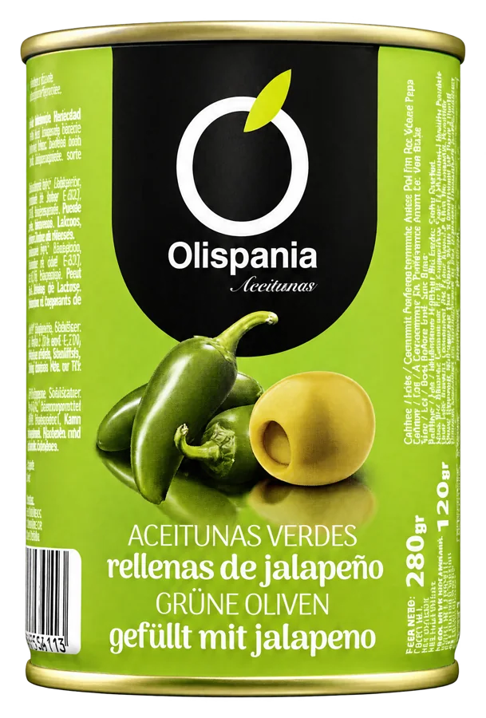
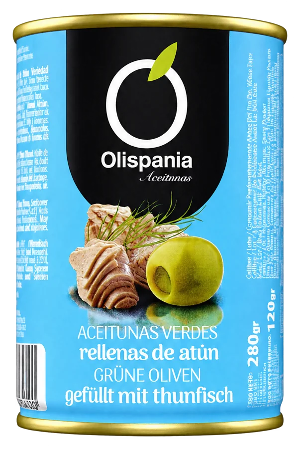
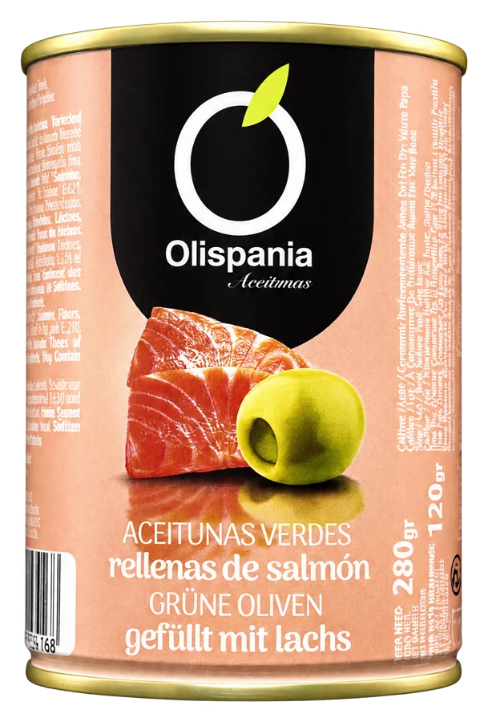
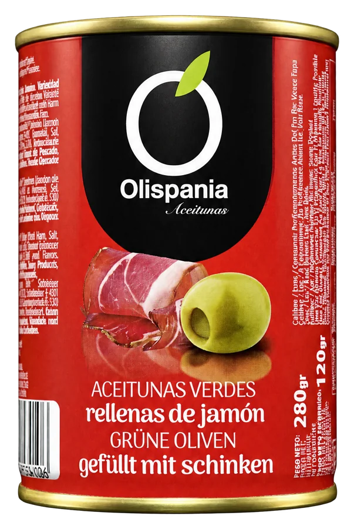

Produits
Olives vertes farcies aux saveurs
Formats : 10 oz.
7 produits
Télécharger la fiche de la catégorie (PDF) Télécharger le catalogue complet




Toutes les références
Olives vertes farcies au citron
- 10 oz
- 300 ml
- 280 g net
- 120 g égoutté
- calibre 240/260
Olives vertes farcies au citron vert-citron
- 10 oz
- 300 ml
- 280 g net
- 120 g égoutté
- calibre 240/260
Olives vertes farcies au poivron
- 10 oz
- 300 ml
- 280 g net
- 120 g égoutté
- calibre 240/260
Olives vertes farcies au jalapeño
- 10 oz
- 300 ml
- 280 g net
- 120 g égoutté
- calibre 240/260

Olives vertes farcies au thon
- 10 oz
- 300 ml
- 280 g net
- 120 g égoutté
- calibre 240/260

Olives vertes farcies au saumon
- 10 oz
- 300 ml
- 280 g net
- 120 g égoutté
- calibre 240/260

Olives vertes farcies au jambon
- 10 oz
- 300 ml
- 280 g net
- 120 g égoutté
- calibre 240/260
Les poids et calibres sont ceux du catalogue 2026. Le calibre indique la taille de l’olive.
Plus de produits
- Serie Oro
- Olives vertes farcies à l’anchois
- Olives vertes farcies à l’anchois extra-grosses
- Bocal 314 ml
- Bocal 850 ml
- Olives vertes avec noyau
- Olives vertes dénoyautées
- Olives vertes cassées assaisonnées « Chupadedos »
- Olives vertes cassées assaisonnées « Saveur de la grand-mère María »
- Olives en rondelles
- Cocktail d’olives et de cornichons
- Olives vertes cassées assaisonnées « Mojo picón »
- Cornichons au vinaigre
- Olives noires
- Bocal gallon
- Bocal 1/2 gallon
- Bocal 370 ml
- Bocaux 500, 445 et 212 ml